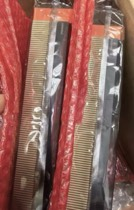

《我出10万订金，买个机会教土耳其客做人》The 100K Deposit That Taught a Turkish Client a Lesson
The 100K deposit that set a trap for a Turkish middleman — Guangzhou, 2000
90年代大學畢業，做過中學教師、翻譯、外貿電子家電、服裝鞋履、珠寶電車、教育培訓。唔係工程師，係幫老闆將技術變成錢嘅人。而家搞AI算力服務器，投資00後年輕人創新創業。 Uni grad in the 90s. Teacher, translator, foreign trade across electronics, garments, jewelry, e-bikes, training. Not an engineer — the guy who turns tech into money for bosses. Now doing AI compute and investing in Gen-Z innovators.
「我唔睇技術，我睇技術點樣改變生意。同我投資00後年輕人，因為佢哋有膽識。」 "I don't look at tech. I look at how tech changes business. And I invest in Gen-Z because they have guts."
年商業經驗Years in Business
全球客戶服務Clients Served
行業跨域Industries
全球首創產品World Firsts
唔係教程，係真實經歷。一個人點樣由實體產品走到數碼時代。Not tutorials. Real stories from someone who's been through too many industries.

七善門科技：AI回憶錄、大模型活動。星辰算力：英偉達H200 NVL服務器部署，幫企業搭建AI基礎設施。Qishanmen Tech: AI memoirs, LLM events. Star Compute: NVIDIA H200 NVL server deployment for enterprise AI infrastructure.
七善門科技 · 星辰算力 · H200 NVLQishanmen · Star Compute · H200 NVLTikTok、Tumer、Amazon、阿里巴巴、獨立站。唔係講理論，係講點樣由零開始做到有單。TikTok, Tumer, Amazon, Alibaba, independent stores. Not theory — how to go from zero to orders.
Amazon · TikTok · 獨立站Amazon · TikTok · DTC見過太多起落，知道咩係真嘅咩係吹水。投資有想法嘅年輕人，幫佢哋將創意變成生意。Seen too many ups and downs. Know what's real and what's hype. Investing in young people with ideas, helping turn creativity into business.
mentorship · seed fundingmentorship · seed funding唔係日更，係有嘢想講先寫。Not daily. I write when I have something to say.
The 100K deposit that set a trap for a Turkish middleman — Guangzhou, 2000
The Australian client's 5000 HKD "audition" across all of China — and how I turned the tables
How I bought a concept for 5000 HKD and turned it into an industry entry ticket
The hidden demand from old-school business owners
Real Q&A from cross-border e-commerce operators
「做貿易最緊要唔係搵客，係留住客。我做咗26年，500幾個客戶，靠嘅就係一句——答應咗嘅嘢，死都要做到。」"In trade, finding customers isn't the hardest part. Keeping them is. 26 years, 500+ clients — the secret is simple: do what you promised, no matter what."
有類似經歷想分享，或者有生意上嘅問題？我見到就覆。WhatsApp 66417912（香港）Similar experiences to share or business questions? I'll reply when I see it. WhatsApp 66417912 (Hong Kong)
聯繫鄭哥 →Contact Hany →